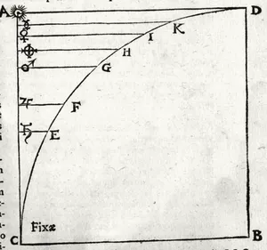
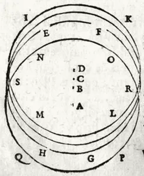

The Cosmographic Mystery¶
Prodromus Dissertationum Cosmographicarum, continens Mysterium Cosmographicum (Tübingen, 1596; Frankfurt, 1621)
Interactive 3D CAD Model — Tabula III (Folio 0034)¶
Parametric 3D CAD reconstruction of Kepler’s 1597 folding copperplate (Tabula III): six cutaway hemispherical planetary shells (\(\alpha\) Saturn through \(\lambda\) Mercury), five watertight mitered open-frame Platonic scaffolds (Cube \(\beta \supset\) Tetrahedron \(\delta \supset\) Dodecahedron \(\zeta \supset\) Icosahedron \(\theta \supset\) Octahedron \(\kappa\)), central Sun (\(\mu\)), and carved Renaissance pedestal. Drag to orbit, scrub Explode, toggle Cutaway / Full Orbs / Solids, or switch between Exact 1:1 Caput XIII and Expanded Core proportions.
Table of Contents¶

Preface to the Reader: The Graz Discovery
It is my intention, gentle Reader, to demonstrate in this little book that the Most Good and Great Creator, in founding this mobile world and arranging the order of the heavenly orbs, looked upon those five regular bodies that have earned such celebrated renown from the time of Pythagoras and Plato down to our own day, and that to their nature He accommodated the number of the heavens, their proportions, and the law of their motions.

Chapter I: By What Reasons the Hypotheses of Copernicus Are Rendered Agreeable
By what reasons the hypotheses of Copernicus are rendered agreeable; and an explanation of the hypotheses of Copernicus.

Chapter II: First Outline of the Demonstration
First outline of the demonstration.
Chapter III: Primary and Secondary Solids & Earth’s Station
That these five solids are distinguished into two orders; and that the Earth is rightly stationed.
Chapter IV: Why Three Solids Surround Earth and Two Lie Within
Why do three bodies surround the Earth, while the remaining two clothe it within?
Chapter V: The Cube Between Saturn and Jupiter
That the cube is the first of the bodies, and between the highest planets.
Chapter VI: The Tetrahedron Between Jupiter and Mars
Now no one will greatly wonder why the Pyramid follows the Cube, since (1) it dares almost to contend with the Cube for primacy. (2) Moreover, either the pyramids themselves or analogous irregular ones serve for the composition of the remaining bodies. For 20 pyramids, slightly shorter than tetrahedral ones, compose the Icosahedron; 8 still shorter ones, the Octahedron. And although the Dodecahedron consists of a hidden square, it too must necessarily be resolved into pyramids. (3) Nor is this to be despised, that a Tetrahedron can be resolved into four complete pyramids and one Octahedron of sides smaller by half. (4) Just as in planes all polygons are resolved into triangles, so for the sake of measurement the remaining solids are resolved into pyramids, which we then measure by cubes, as we measure triangles by squares. Thus it is the measure of the rest, and is most easily measurable of all by the cube. (5) Hence most of its lines, like those of the cube, so readily receive their quantity from the ratio of the diagonal—yet not otherwise than in square numbers. (6) Moreover, the regularity of a pyramid depends upon its sides alone, whereas that of a cube depends also upon its angles. And thus among equilateral pyramids there is no more than one kind, whereas in a hexahedron, even with equal sides, there is an infinite variety of angles. On which account, if there were no other reasons, I leave in doubt whether it ought to be preferred to the cube or placed after it.
Chapter VII: Order and Polar Duality of the Secondary Solids
As far as the secondary bodies are concerned, since the Octahedron is prior to the Icosahedron, it might seem wonderful to someone why what is posterior in the order of Nature should precede in the world? For since Mars has obtained the Dodecahedron with the Earth, it follows from what we have said that between the Earth and Venus lies the Icosahedron. And many arguments prove that the Octahedron is prior to the Icosahedron. For first, the Octahedron is born (not indeed truly, yet as though it were so born) from the Cube and the Pyramid, the first bodies in their own order: from the former it borrows its number of sides, from the latter its triangular base. The Icosahedron, on the other hand, is born from the Pyramid and the Dodecahedron, the last in their own order; for again it borrows its base from the former, and its number of sides from the latter. 2. If you look at the Octahedron and the Icosahedron from their angles, the former displays the square base of the Cube, the latter the pentagonal base of the Dodecahedron. 3. The Octahedron is of equal altitude with the Cube, as we shall see, and the Icosahedron with the Dodecahedron. 4. The Octahedron with the Cube, and the Icosahedron with the Dodecahedron, interchange their number of bases and angles. For the bases of the Cube and the angles of the Octahedron are six; the angles of the former and the bases of the latter are eight. Likewise the bases of the Dodecahedron and the angles of the Icosahedron are twelve on either side; conversely, the angles of the former and the bases of the latter are twenty. 5. The Octahedron imitates the right angle of the Cube, the Icosahedron the
Chapter VIII: Why the Octahedron Lies Between Venus and Mercury
Yet it does not follow on that account that it ought to follow immediately upon the Dodecahedron in the world. 1. For because they are in truth two diverse orders, they can also look toward diverse regions of the world with their heads. 2. And indeed, since the Cube approaches the worthiest region of the world outside the Earth—namely, the circumference, or the fixed stars—it was fitting that the head of the other order also should approach the worthier place of the world within the Earth’s orb. Now nothing is worthier than the center and the Sun. 3. And if we also regard the arrangement of both orders as one, what more elegant thing could be done than that it should be closed on both sides by like and foremost bodies? 4. It is also more beautiful that the many-faced bodies should follow one another in the middle, and that from a plurality of bases one should descend gradually on either side to a paucity, if nothing else prevents it—rather than that a body of many bases should be followed by one of few bases, and finally another should succeed of far more bases than either. 5. And since the Dodecahedron was last in its own order, it was fitting that there should succeed to it from the other order that which was like unto it. 6. This also pertains to the dignity of the Earth, that on both sides it should be attended as similarly as possible. Since, therefore, it had so fallen out that on the outside it was next surrounded by a many-faced body, it was fitting that on the inside too a many-faced body should next embrace it. Thus these two orders of these five bodies have been brought together into one by the most wise Creator in such a way that they are turned heel-to-heel toward one another at the Earth, which is their dividing wall, while with their heads they depart toward opposite regions of the world.
Chapter IX: Planetary Qualities Derived from the Five Solids
I cannot pass on without tasting here some few things from that part of Physics which treats of the qualities of the Planets: so that it may appear that their natural powers also observe this order, and preserve the same proportion toward one another. For if you reckon those planets which encompass the earth together with those bodies which they contain inscribed within themselves, and assign to the planets enclosed by the Earth’s orb those bodies by which each is circumscribed—which I judge can be done with the best of reason—Saturn will have the Cube, Jupiter the Pyramid, Mars the Dodecahedron, Venus the Icosahedron, and Mercury the Octahedron. But the Earth, since it is nothing but the boundary, is reckoned with neither. Astrologers also distinguish the Sun and Moon by the greatest interval from the other five, so that there is no need to mention them here, and the number of bodies agrees beautifully with the 5 Planets.
Chapter X: Origin of the Noble Sexagesimal Numbers
It is endless to pursue every detail; nor would an Astrologer reflect further on these things without fruit. Let us look now at the Arithmetic of Astronomers, and the sacred numbers, 6, 12, 60. Thus, with the exception of the fourth part and the sixth part—namely, 15 and 10—all the aliquot parts of sixty are found in these five bodies. Conversely, with the exception of the plane angles of the Octahedron and cube, each of which has 24, all the other things that are counted are aliquot parts of sixty: so that I think scarcely to any number could any natural thing be assigned, even by Pythagoras, which is more peculiarly its own than this number is to the said five bodies.

Chapter XI: Orientation of the Solids & Origin of the Zodiac
In these chapters I shall have the physicists hostile against me, because I have deduced the natural properties of the planets from immaterial things and mathematical figures, and furthermore dare to investigate even the origins of the circles from the bare imagination of certain sections. To this I wish to reply in a few words: that God the Creator, since He is Mind, and does what He wills, is not hindered from looking, in adapting forces and marking out circles, to things that subsist either without matter or in imagination.

Chapter XII: The Division of the Zodiac, and Aspects
Many have taken the division of the Zodiac into twelve fixed signs for a human invention—such a one, indeed, as has no natural reality underlying it. For they suppose that these portions (moria) do not differ in natural powers or properties, but were

Chapter XIII: On Computing the Orbs Inscribed in and Circumscribed about the Bodies
Hitherto nothing has been said except certain agreeing signs and plausible indications (eikota) of our proposed Theorem. Let us now pass to the astronomical distances (apostemata) of the orbs and geometrical demonstrations: unless these agree, we shall undoubtedly have wasted all our preceding labor. First of all, let us see in what proportion the orbs inscribed in each of these five regular bodies stand to those circumscribed about them.

Chapter XIV: The Principal Aim of This Little Book, and the Astronomical Proof That These Five Bodies Lie Between the Orbs
The principal aim of this little book, and the astronomical proof that these five bodies lie between the orbs.

Chapter XV: Correction of Distances, and Diversity of Prosthaphaereses
Correction of distances, and diversity of prosthaphaereses.
Chapter XVI: The Moon’s Orb & Celestial Matter
A special warning concerning the Moon, and on the matter of the bodies and orbs.

Chapter XVII: Mercury’s Inscribed Square in the Octahedron
Another warning concerning Mercury.
Chapter XVIII: Observational Errors in Copernicus & Astronomy’s Precision
On the disagreement in general between the prosthaphaereses from the solids and those of Copernicus, and on the exactness of Astronomy.
Chapter XIX: On the Remaining Discrepancy of Each Planet Individually
On the remaining discrepancy of each planet individually.
Chapter XX: Proportion of Orbital Periods to Solar Distances
What the proportion of the motions is to the orbs.
Chapter XXI: Reconciling the Motive Soul with the Five Solids
What is to be gathered from the defect.

Chapter XXII: Why Planets Move Uniformly About the Equant Center
Why a planet moves uniformly upon the center of the equant.
Chapter XXIII: Astronomical Beginning & End of the World
On the astronomical beginning and end of the world, and the Platonic Year.